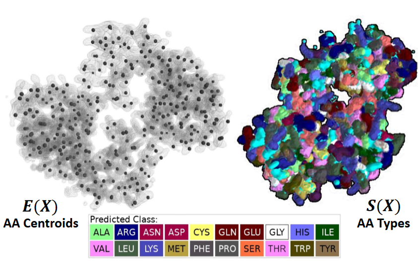
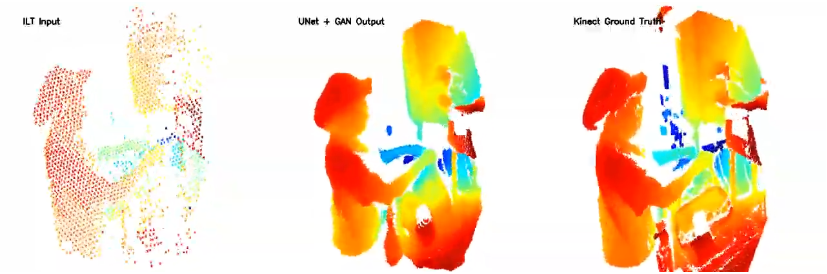

The goal:
Apply novel machine learning techniques to develop protein structure determination methods which can handle both X-ray Diffraction and Cryo-EM samples at challenging low resolutions.

Skills Used
- Protein Structure Determination (Phenix, CCP4, Coot, etc.)
- Volumetric Data Segmentation
- Deep 3D Convolutional Networks (PyTorch)
- Panoptic Segmentation
- BioPython
The goal:
Early stage detection of cognitive decline using a combined quiz/walking game dual task system.
Skills Used
- Python
- Graph Convolutional Networks (PyTorch)
- Human Gait Analysis
- Action Recognition
- Multi-modal fusion
The goal:
Develop a GUI application and design an algorithm to measure the filling rate of industrial containers in real time using multiple sensors to create a full 3D pointcloud environment.

Skills Used
- Multi-Sensor Imaging
- Python
- Point Cloud Registration (OpenCV/Open3D)
- GUI Design (PyQT)
The goal:
Upscale and adjust lower quality point-cloud measurements from low-cost sensors to match the quality of a point-cloud capture from a Kinect in real time.

Skills Used
- Python
- C++
- OpenCV
- Deep Neural Networks (PyTorch)
- Open3D
- Point Cloud Super-Resolution